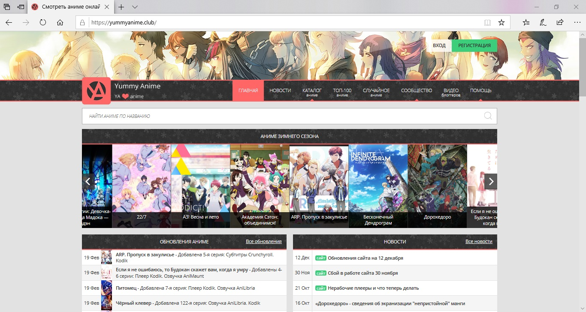

Websites
yummyanime
Anime (US: /ˈænəˌmeɪ/, UK: /ˈænɪˌmeɪ/)[1] (Japanese: アニメ, Hepburn: anime, [aɲime]
(About this soundlisten), plural: anime)[a] is hand-drawn and computer animation
originating from or associated with Japan.